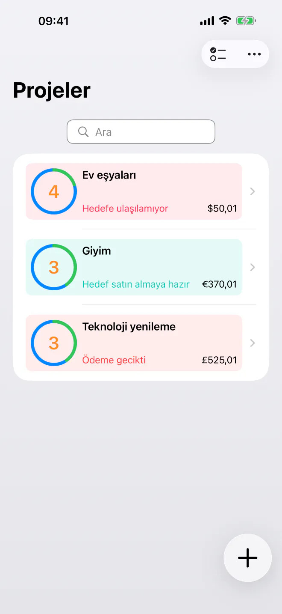
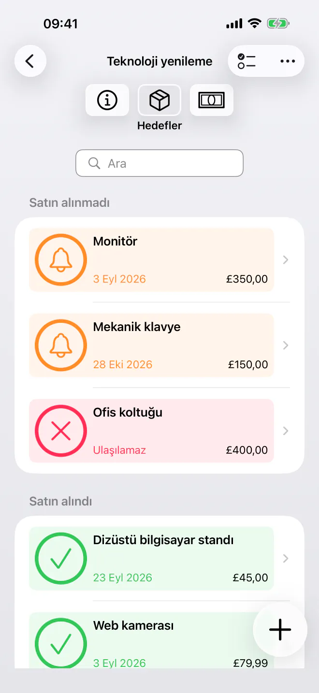
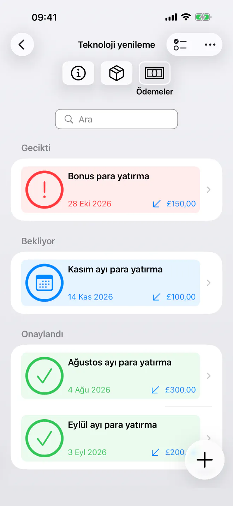
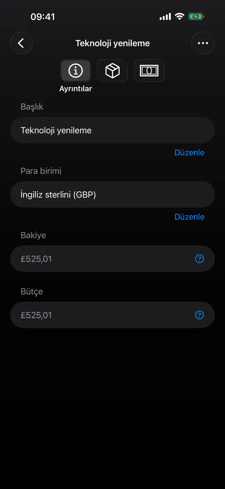

Ne Zaman Alabileceğini Tam Olarak Bil
Tasarruf hedeflerine öncelik ver ve her alımı karşılayabileceğin en erken tarihi öğren. Otomatik satın alma zaman çizelgeleriyle basit, gizli planlama. Hesap gerekmez.


Listendeki bir sonraki şeyi sonunda ne zaman alabileceğini tahmin etmeyi bırak. BudgetBear, hedeflerini net bir satın alma zaman çizelgesine dönüştüren basit ve gizliliğe önem veren bir uygulamadır. Hedeflerini ekle, önceliklerini belirle ve para yatırma işlemlerini planla — hepsi gizliliğine saygı duyan, sakin ve sade tek bir arayüzde.
Satın alımlarını planlamaya başlamaya hazır mısın? BudgetBear’ı bugün indir.
Neden BudgetBear?
- %100 Gizli ve Kontrol Sende — Finansal verilerin yalnızca cihazında kalır. Özel hesap yok, üçüncü taraf sunucu yok ve bulut kaydı yok — asla.
- Minimal ve Odaklı — İşleri halletmeye odaklanan hızlı ve kullanımı kolay bir arayüz. Gereksiz ayrıntı yok, gereksiz karmaşıklık yok.
- Ne Zaman Alabileceğini Tam Olarak Bil — BudgetBear, her hedefi karşılayabileceğin en yakın tarihi hesaplar; böylece artık tahmin yürütmezsin.
- Önceliklere Göre Tasarlandı — Önceliklerini planlı ödemelerinle birleştir ve tasarruf planını her hedef için gerçekçi bir satın alma tarihine dönüştür.
Önceliklerini Satın Alma Tarihine Dönüştür
Netlik üzerine kurulu bir sistemle uzun vadeli harcama ve tasarruf hedeflerinin tam kontrolünü eline al.
Öncelik Tabanlı İstek Listeleri
Tahmini fiyatlarıyla hedef ürünleri (hedefler) ekle ve tam istediğin tercih sırasına sürükle.
Dinamik Zaman Çizelgesi Hesabı
Fiyatları değiştirdiğinde, para yatırma işlemleri eklediğinde veya hedeflerin sırasını değiştirdiğinde satın alma tarihlerinin anında güncellendiğini gör.
Esnek Nakit Akışı
Bütçeleri tamamlamak için tek seferlik para yatırma işlemleri ekle veya parayı başka bir yere ayırmaya karar verirsen para çekme işlemlerini kaydet.
Planlı Ödemeler
Zaman çizelgeni otomatik tutmak için yinelenen, süreli para yatırma veya çekme planları (örneğin her 2. salı ya da maaş gününde) oluştur.

Tasarruf Hedefin İçin Temel Özellikler
- Öncelikli Tasarruf Projeleri — İlgili hedefleri seyahat, elektronik, ev yenileme veya acil durum birikimi gibi özel projelerde grupla.
- Akıllı Dağıtım — Para, tam olarak finanse edilene kadar otomatik olarak en yüksek öncelikli hedefe yönlendirilir, ardından sıradakine geçilir.
- Basit ve Minimalist — Gereksiz ayrıntı ve karmaşık menüler olmadan hızlı giriş için tasarlanmış temiz, dikkat dağıtmayan bir arayüz.
- Süreli Yinelenen Planlar — Karmaşık kurallar olmadan yinelenen katkılar için başlangıç tarihlerini, bitiş tarihlerini ve aralıkları belirle.
Çok Yönlü Tasarruf Kullanım Senaryoları
Birikim fonlarından büyük alımlara kadar BudgetBear hedeflerine uyum sağlar.
Birikim Fonları
Sigorta faturaları, yılbaşı alışverişi veya araç bakımı gibi önceden bilinen gelecekteki giderler için para ayır.
Öncelikli İstek Listeleri
Sonraki alacaklarını düzenle ve yeni bir para yatırma işleminin satın alma tarihini ne kadar yaklaştırdığını gör.
Büyük Alışverişler
Büyük alımları yönetilebilir yinelenen katkılara böl ve zaman çizelgenin zamanla kısaldığını izle.

Tasarımdan Gelen Gizlilik
Abonelik yok. İzleyici yok. Özel hesap yok.
BudgetBear her şeyi yerel olarak tutar — hiçbir şey yüklenmez, senkronize edilmez veya kimseyle paylaşılmaz. Hedeflerin ve bütçe bilgilerin cihazından asla çıkmaz.
En fazla 3 projeyle ücretsiz başlayabilirsin. Tek seferlik bir Pro yükseltmesi sınırsız projenin kilidini açar — abonelik yok, asla.
Net ve Etkili
İster bir tatil için, ister yeni bir cihaz için biriktir, ister acil durum fonu oluştur; BudgetBear, tasarruf hedeflerini somut satın alma tarihlerine dönüştürmek için güvenilir yol arkadaşındır. Basit, gizli ve abonelik gerektirmez.
En iyi üretkenlik araçları yoluna çıkmaz ve odaklanmanı sağlar. BudgetBear de böyledir — gereksiz özellik yok, bunaltıcı arayüz yok, hedeflerin için yalnızca net bir zaman çizelgesi.